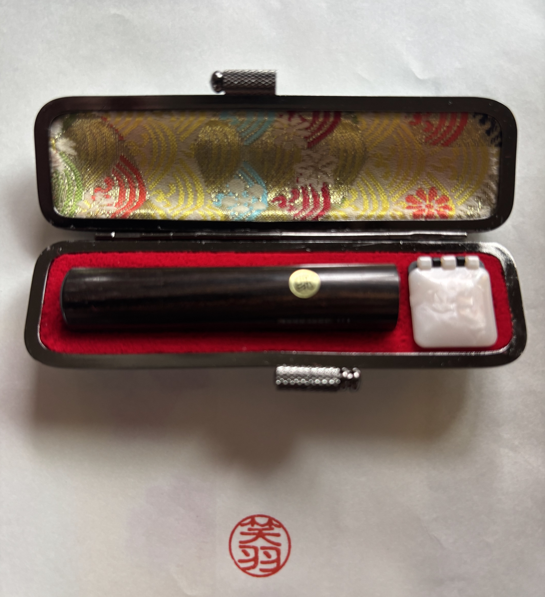
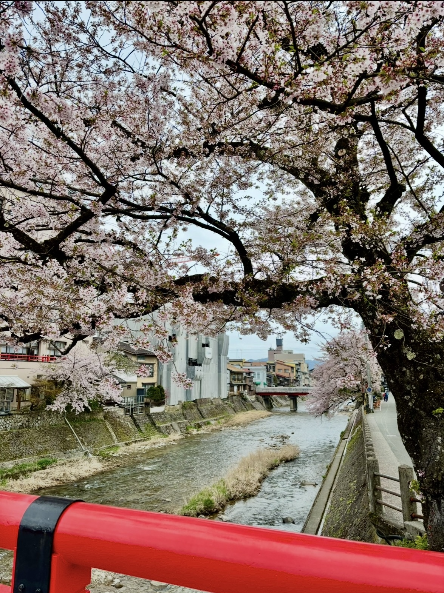

Your Name in Japanese
Foreign names are usually written in Katakana in Japanese. For a more personal touch, Kanji can also be chosen based on the sound and meaning of your name.


What is personalized Hanko?
A personalized Hanko is a traditional Japanese seal with your own name written in Japanese characters. A personalized Hanko can turn your own name into a meaningful souvenir connected to Japanese language and culture.
Your name in Japanese
Foreign names are usually written in Katakana. For a personalized hanko, Kanji can also be chosen based on the sound of the name. Since each Kanji has its own meaning, it can add a more personal meaning to the name.

Why choose a personalized Hanko?
Unlike ordinary souvenirs, a personalized hanko is more personal because it includes your own name. It creates a connection with Japanese language and culture. It can also become a memorable reminder of your trip to Japan.